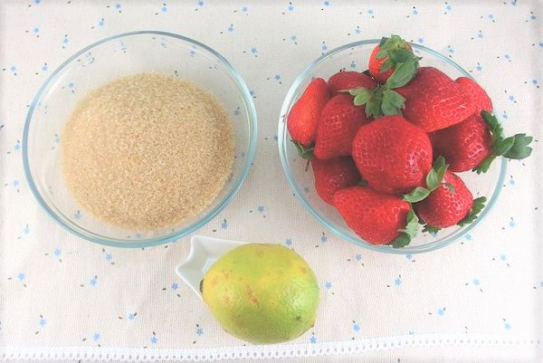

製作Making
過程 Process

1.摘採
選用苗栗大湖渾圓、鮮紅嬌豔的超甜大草莓並用低溫冷藏運送，保持新鮮品質。
2.清洗
草莓裝在淡鹽水浸泡後，再用流動的水漂洗多次再瀝乾。

3.備料
草莓、檸檬洗淨切開後榨汁，放入冰糖，準備好後先放冰箱。
4.熬煮
草莓倒入鍋內，以小火煮至出水，轉中火煮至沸騰並濾網將澀汁去除。
5.殺菌
果醬瓶消毒是保存果醬的關鍵之一，使用沸水加烤箱消毒法。

6.裝瓶
裝入晾乾的玻璃瓶，蓋緊瓶蓋倒扣30分鐘，再放進冰箱的冷藏。
原料 Raw Material
頂級白砂糖
日本三井白糖

新鮮水果
台灣嚴選小農

天然果膠
自製青蘋果膠
特選檸檬
屏東清香檸檬